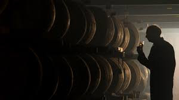
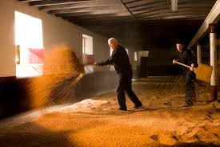
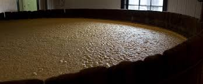

Malt – Малц, малцово
 Малцово уиски. Думата малц означава покълнал ечемик (наричат го също малциран). Това е основната суровина за производство на шотландско, ирландско и някои други видове уиски. За шотландското малцът се суши като се опушва с торф, което внася димен нюанс в аромата и вкуса. За ирландското се суши без да се опушва с торф. В Шотландия различните производители на уиски използват повече или по-малко опушен малц, което влияе на вкуса и аромата на уискито. Ако на етикета е означено само Malt или Blended Malt, или Pure Malt, или Vatted Malt, това означава, че уискито е смес от различни малцови дестилати, които може да са от множество различни дестилационни (спиртоварни), също така и с различна възраст. Използват се обикновено около 5-годишни и по-стари дестилати. Най-често този вид малцови уискита са разредени с вода до 40-43% алкохол, но има изключения и с по-висок градус. Иначе градусът на отлежалите дестилати в бъчвите е над 50% и над 60%, в зависимост от възрастта. Обикновено в Шотландия малцовият дестилат излиза от дестилацията с около 67-70 градуса и се оставя да отлежава, като през годините губи от градусите. Single Malt – Едномалцово Най-скъпите видове уиски. Бутилират се само от малцов дестилат от една спиртоварна (дестилационна). Много от експертите казват, че сингъл молт е уиски, дестилирано от единична малцова суровина, в една година. Възможно е обаче да се смесват малцове от различни години, но на една и съща дестилационна. Обикновено за Single Malt отлежаването е най-малко 7-8-години. Освен торфения и малцовия аромат и вкус, те придобиват качество и от бъчвите. За отлежаването на Single Malt се използват употребявани бъчви от високоалкохолните вина шери и порт, също и от бърбън и др., които внасят ароматни и вкусови съставки. Бутилира се направо дестилатът от бъчвите, но според различните технологии може да бъде филтриран – механично и чрез изстудяване, може и да не бъде филтриран. Често се случва при разреждане с вода в чашата, уиски от този вид да помътнява леко. Може да бъде с алкохолния градус на дестилата от бъчвата (cask stenght) – 50% до 60% алкохол, може да бъде разреден и до стандартните 40% или 43%. Обикновено е с оригиналния си цвят, но може цветът да бъде засилен с карамел. Single Cask Malt – Едномалцово от една бъчва Уиски от една дестилация и от една бъчва. Обикновено най-скъпото уиски, защото се подбират най-добрите бъчви за малка партида. Продава се в малки колекционерски серии, с номерирани бутилки, някои са с изписани реколти на етикета. Търговци и познавачи в бранша избират и купуват от различни дестилационни отделни бъчви малцов дестилат от една или друга година, обикновено над 15-годишни, после ги бутилират с тяхна марка, различна от тази на производителя, но с указание за произхода.